Change analysis for Gabon for PRIMAP-hist v2.8_final compared to
v2.7_final
This changelog is published under the creative commons non-commercial
share alike license. For more information see creativecommons.org.
Overview over
emissions by sector and gas
The following figures show the aggregate national total emissions
excluding LULUCF AR6GWP100 for the country reported priority scenario.
The dotted lines show the v2.7_final data.
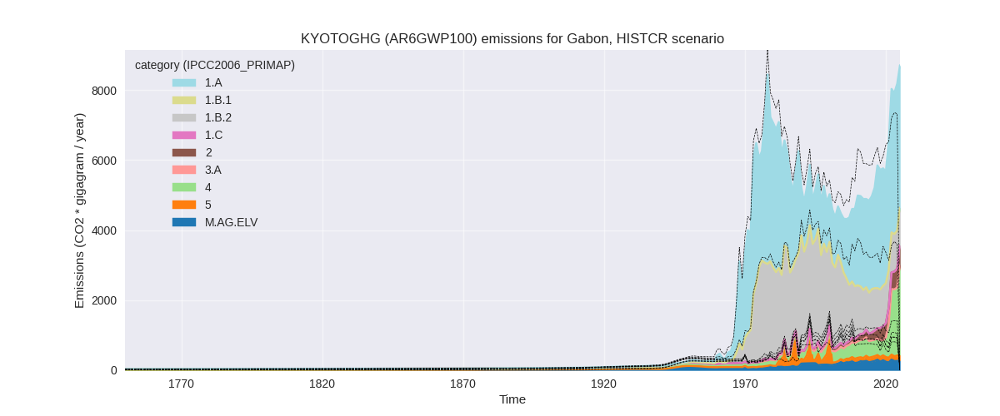
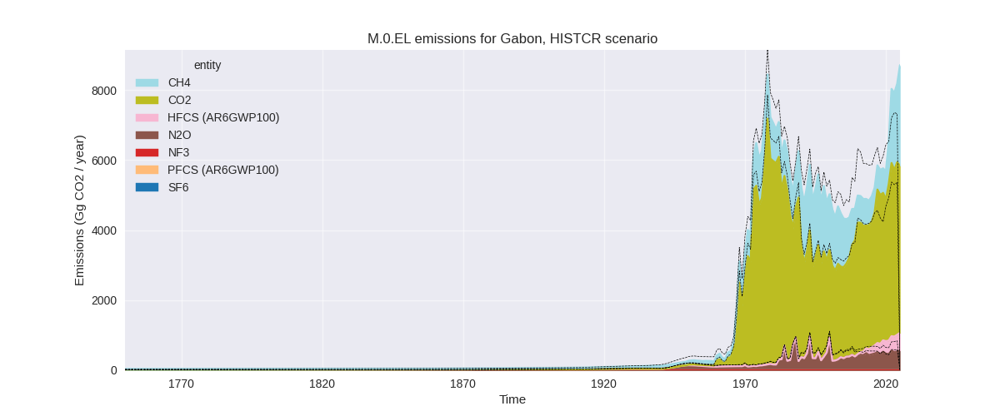
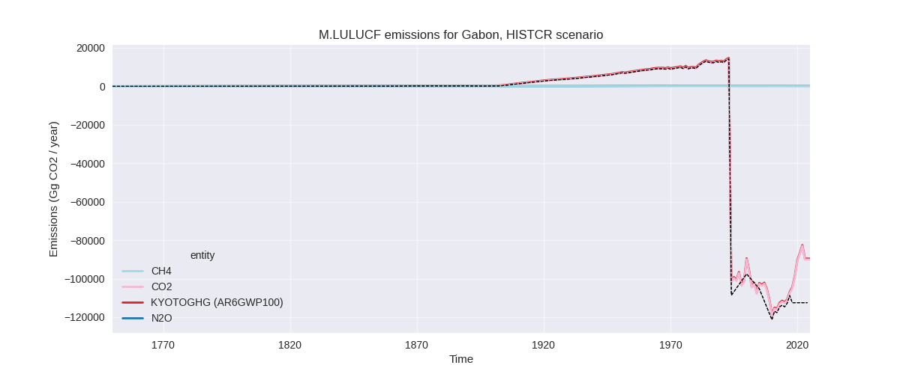
The following figures show the aggregate national total emissions
excluding LULUCF AR6GWP100 for the third party priority scenario. The
dotted lines show the v2.7_final data.
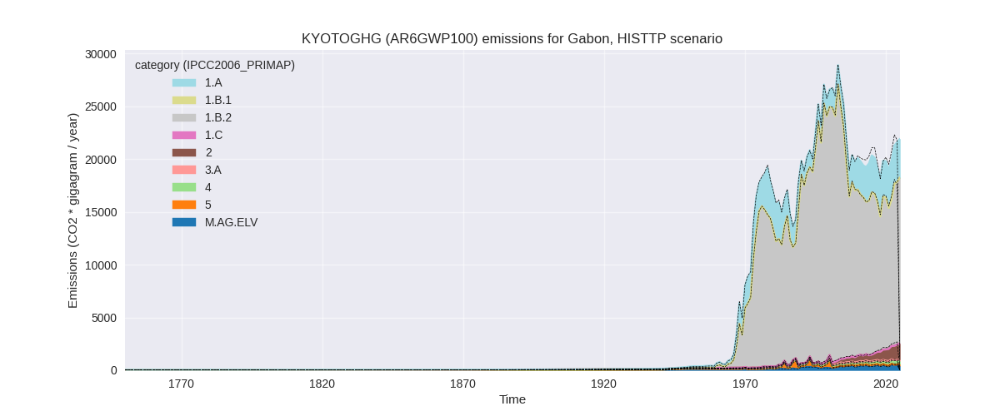
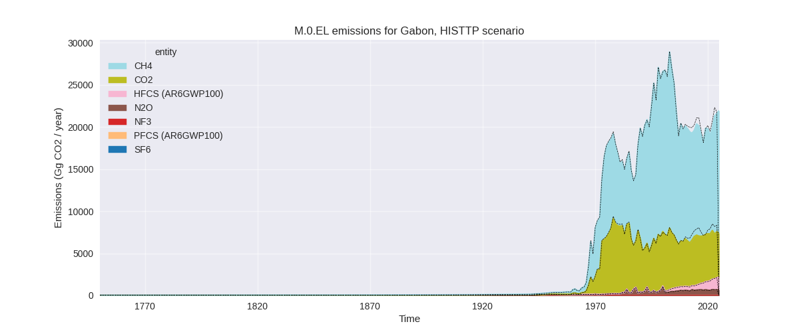
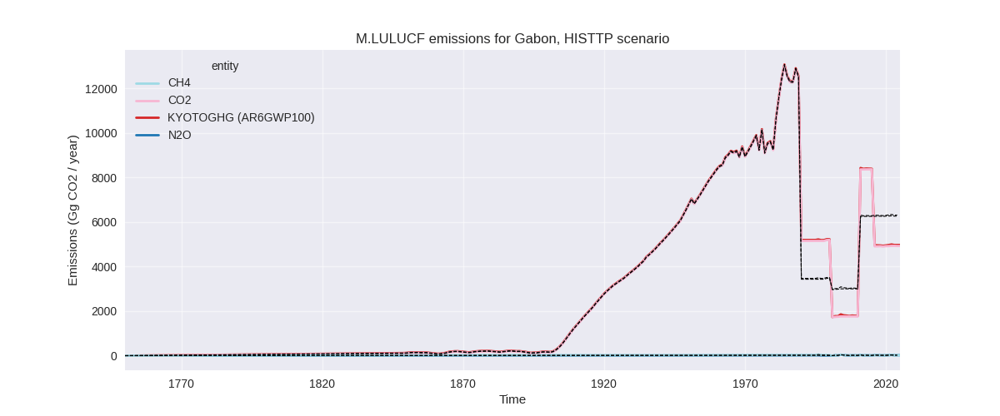
Used country reported data
The changelog with this information is available upon request for
non-commercial customers. Paying commercial customers will be provided
with the information.
Overview over changes
In the country reported priority scenario we have the following
changes for aggregate Kyoto GHG and national total emissions excluding
LULUCF (M.0.EL):
- Emissions in 2024 have changed by 11.7%% (854.73 Gg CO2 / year)
- Emissions in 1990-2024 have changed by -8.1%% (-466.99 Gg CO2 / year)
In the third party priority scenario we have the following changes
for aggregate Kyoto GHG and national total emissions excluding LULUCF
(M.0.EL):
- Emissions in 2024 have changed by -0.8%% (-178.21 Gg CO2 / year)
- Emissions in 1990-2024 have changed by -1.1%% (-234.77 Gg CO2 / year)
Most
important changes per scenario and time frame
In the country reported priority scenario the
following sector-gas combinations have the highest absolute impact on
national total KyotoGHG (AR6GWP100) emissions in 2024
(up to 10 with either at least 0.2% impact on total emissions or at
least 20% change):
- 1: 4, CH4 with 1806.17 Gg CO2 / year (104343.7%, 24.7%)
- 2: 1.B.2, CH4 with -1087.10 Gg CO2 / year (-74.1%, -14.9%)
- 3: 1.A, CO2 with 414.42 Gg CO2 / year (11.2%, 5.7%)
- 4: M.AG.ELV, CH4 with -358.78 Gg CO2 / year (-98.3%, -4.9%)
- 5: 2, HFCS (AR6GWP100) with 226.53 Gg CO2 / year (90.4%, 3.1%)
- 6: M.AG.ELV, N2O with -165.74 Gg CO2 / year (-39.3%, -2.3%)
- 7: 3.A, CH4 with -102.17 Gg CO2 / year (-89.1%, -1.4%)
- 8: 4, N2O with 48.35 Gg CO2 / year (68467.7%, 0.7%)
- 9: 2, CO2 with -44.92 Gg CO2 / year (-42.8%, -0.6%)
- 10: 4, CO2 with 42.79 Gg CO2 / year (922.9%, 0.6%)
In the country reported priority scenario the
following sector-gas combinations have the highest absolute impact on
national total KyotoGHG (AR6GWP100) emissions in
1990-2024 (up to 10 with either at least 0.1% impact on
total emissions or at least 10% change):
- 1: 1.B.2, CH4 with -465.10 Gg CO2 / year (-34.1%, -8.1%)
- 2: 4, CH4 with 418.03 Gg CO2 / year (37925.5%, 7.3%)
- 3: M.AG.ELV, CH4 with -360.05 Gg CO2 / year (-98.1%, -6.2%)
- 4: M.AG.ELV, N2O with -163.92 Gg CO2 / year (-43.8%, -2.8%)
- 5: 1.A, CO2 with 99.59 Gg CO2 / year (4.7%, 1.7%)
- 6: 3.A, CH4 with -77.32 Gg CO2 / year (-73.9%, -1.3%)
- 7: 2, HFCS (AR6GWP100) with 38.75 Gg CO2 / year (52.8%, 0.7%)
- 8: 4, N2O with 29.07 Gg CO2 / year (61464.5%, 0.5%)
- 9: 2, CO2 with -27.45 Gg CO2 / year (-28.7%, -0.5%)
- 10: 4, CO2 with 22.34 Gg CO2 / year (1489.9%, 0.4%)
In the third party priority scenario the following
sector-gas combinations have the highest absolute impact on national
total KyotoGHG (AR6GWP100) emissions in 2024 (up to 10
with either at least 0.2% impact on total emissions or at least 20%
change):
- 1: 1.A, CO2 with -577.91 Gg CO2 / year (-16.0%, -2.7%)
- 2: 1.B.2, CH4 with 552.89 Gg CO2 / year (4.4%, 2.5%)
- 3: 2, CO2 with -217.83 Gg CO2 / year (-93.4%, -1.0%)
- 4: 1.A, CH4 with 62.66 Gg CO2 / year (13.1%, 0.3%)
- 5: M.AG.ELV, N2O with -58.48 Gg CO2 / year (-18.6%, -0.3%)
In the third party priority scenario the following
sector-gas combinations have the highest absolute impact on national
total KyotoGHG (AR6GWP100) emissions in 1990-2024 (up
to 10 with either at least 0.1% impact on total emissions or at least
10% change):
- 1: 1.A, CO2 with -175.61 Gg CO2 / year (-8.1%, -0.8%)
- 2: 2, CO2 with -93.78 Gg CO2 / year (-77.9%, -0.4%)
Notes on data changes
The changelog with this information is available upon request for
non-commercial customers. Paying commercial customers will be provided
with the information.
Changes by sector and gas
For each scenario and time frame the changes are displayed for all
individual sectors and all individual gases. In the sector plot we use
aggregate Kyoto GHGs in AR6GWP100. In the gas plot we usenational total
emissions without LULUCF.
country reported scenario
2024
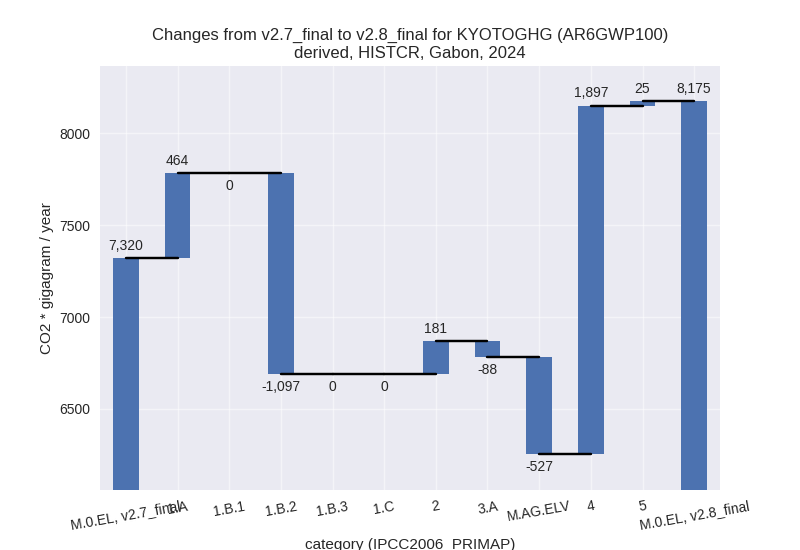
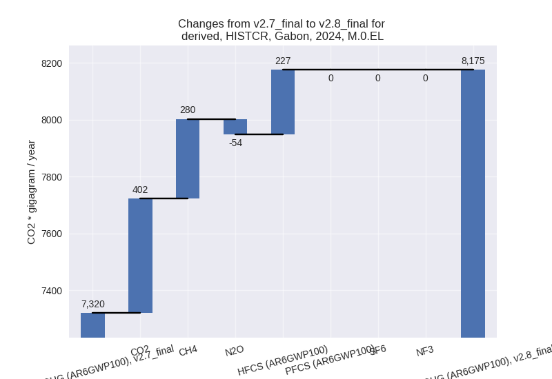
1990-2024
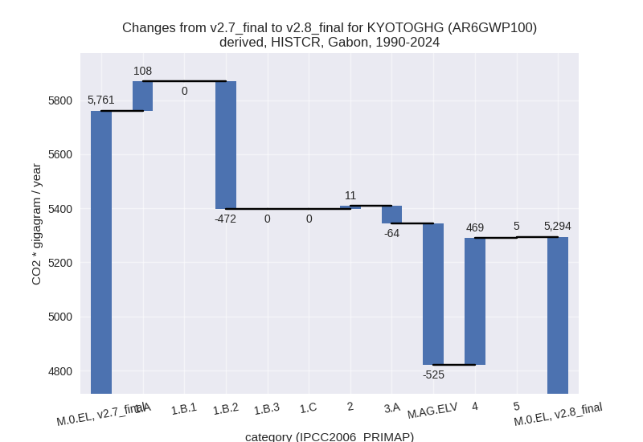
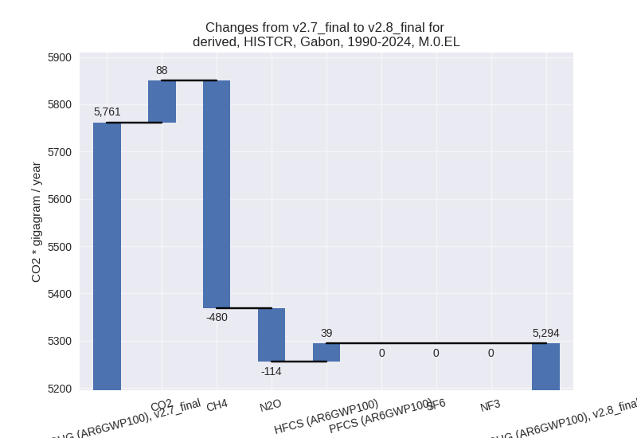
third party scenario
2024
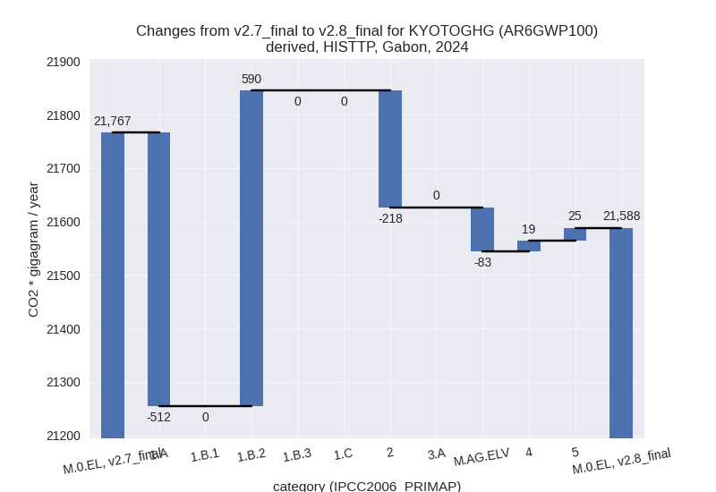
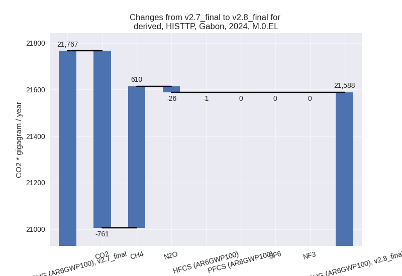
1990-2024
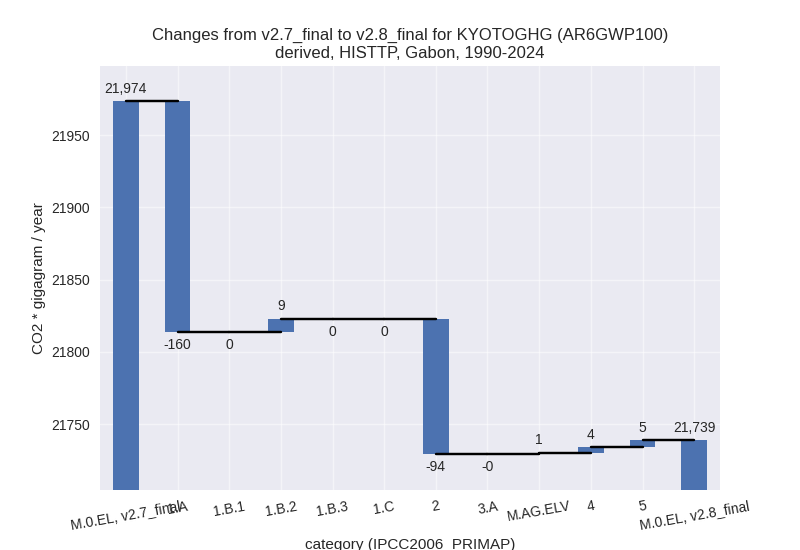
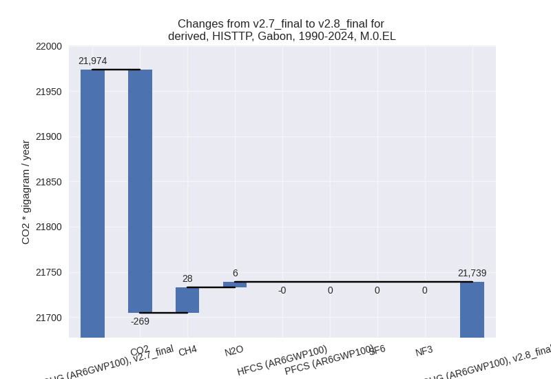
Detailed changes for the
scenarios:
country reported scenario
(HISTCR):
Most important changes
per time frame
For 2024 the following sector-gas combinations have
the highest absolute impact on national total KyotoGHG (AR6GWP100)
emissions in 2024 (up to 20 with either at least 0.2%
impact on total emissions or at least 20% change):
- 1: 4, CH4 with 1806.17 Gg CO2 / year (104343.7%), 24.7%)
- 2: 1.B.2, CH4 with -1087.10 Gg CO2 / year (-74.1%), -14.9%)
- 3: 1.A, CO2 with 414.42 Gg CO2 / year (11.2%), 5.7%)
- 4: M.AG.ELV, CH4 with -358.78 Gg CO2 / year (-98.3%), -4.9%)
- 5: 2, HFCS (AR6GWP100) with 226.53 Gg CO2 / year (90.4%), 3.1%)
- 6: M.AG.ELV, N2O with -165.74 Gg CO2 / year (-39.3%), -2.3%)
- 7: 3.A, CH4 with -102.17 Gg CO2 / year (-89.1%), -1.4%)
- 8: 4, N2O with 48.35 Gg CO2 / year (68467.7%), 0.7%)
- 9: 2, CO2 with -44.92 Gg CO2 / year (-42.8%), -0.6%)
- 10: 4, CO2 with 42.79 Gg CO2 / year (922.9%), 0.6%)
- 11: 1.A, N2O with 26.27 Gg CO2 / year (127.4%), 0.4%)
- 12: 5, N2O with 24.89 Gg CO2 / year (19.1%), 0.3%)
- 13: 1.A, CH4 with 22.96 Gg CO2 / year (228.5%), 0.3%)
- 14: 3.A, N2O with 14.63 Gg CO2 / year (109.6%), 0.2%)
- 15: M.AG.ELV, CO2 with -2.87 Gg CO2 / year (-57.4%), -0.0%)
- 16: 1.B.2, N2O with -2.08 Gg CO2 / year (-98.2%), -0.0%)
- 17: 2, CH4 with -1.06 Gg CO2 / year (-100.0%), -0.0%)
For 1990-2024 the following sector-gas combinations
have the highest absolute impact on national total KyotoGHG (AR6GWP100)
emissions in 1990-2024 (up to 20 with either at least
0.1% impact on total emissions or at least 10% change):
- 1: 1.B.2, CH4 with -465.10 Gg CO2 / year (-34.1%), -8.1%)
- 2: 4, CH4 with 418.03 Gg CO2 / year (37925.5%), 7.3%)
- 3: M.AG.ELV, CH4 with -360.05 Gg CO2 / year (-98.1%), -6.2%)
- 4: M.AG.ELV, N2O with -163.92 Gg CO2 / year (-43.8%), -2.8%)
- 5: 1.A, CO2 with 99.59 Gg CO2 / year (4.7%), 1.7%)
- 6: 3.A, CH4 with -77.32 Gg CO2 / year (-73.9%), -1.3%)
- 7: 2, HFCS (AR6GWP100) with 38.75 Gg CO2 / year (52.8%), 0.7%)
- 8: 4, N2O with 29.07 Gg CO2 / year (61464.5%), 0.5%)
- 9: 2, CO2 with -27.45 Gg CO2 / year (-28.7%), -0.5%)
- 10: 4, CO2 with 22.34 Gg CO2 / year (1489.9%), 0.4%)
- 11: 3.A, N2O with 13.57 Gg CO2 / year (108.5%), 0.2%)
- 12: 1.A, CH4 with 4.42 Gg CO2 / year (45.6%), 0.1%)
- 13: 1.A, N2O with 3.81 Gg CO2 / year (24.4%), 0.1%)
- 14: 1.B.2, N2O with -1.23 Gg CO2 / year (-36.5%), -0.0%)
- 15: M.AG.ELV, CO2 with -0.69 Gg CO2 / year (-24.4%), -0.0%)
- 16: 2, CH4 with -0.28 Gg CO2 / year (-100.0%), -0.0%)
Changes in the main sectors for aggregate KyotoGHG (AR6GWP100)
are
- 1: Total sectoral emissions in 2022 are 5237.91 Gg
CO2 / year which is 65.2% of M.0.EL emissions. 2024 Emissions have
changed by -10.7% (-633.09 Gg CO2 /
year). 1990-2024 Emissions have changed by -8.0% (-363.84 Gg CO2 / year). For 2024
the changes per gas
are:
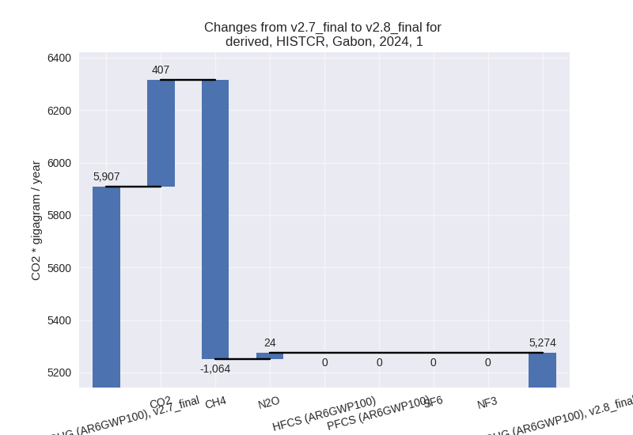
For 1990-2024 the changes per gas
are:
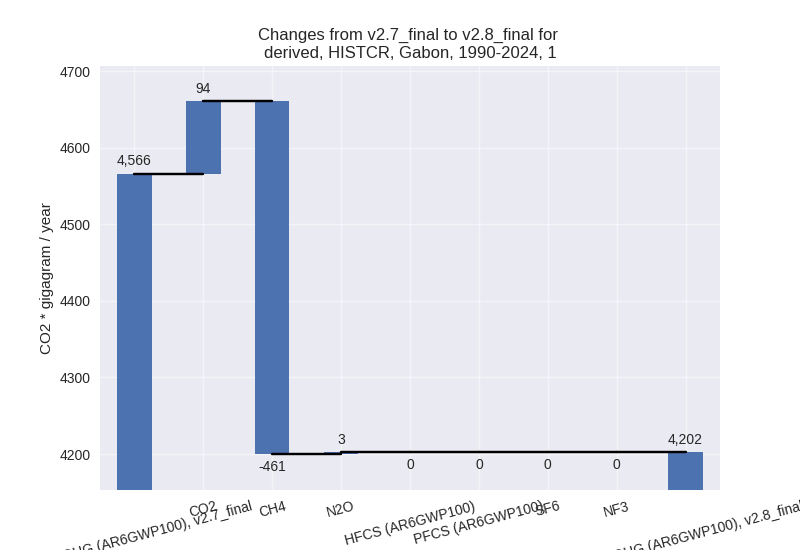
The changes come from the following subsectors:
- 1.A: Total sectoral emissions in 2022 are 4097.15
Gg CO2 / year which is 78.2% of category 1 emissions. 2024 Emissions
have changed by 12.4% (463.65 Gg CO2
/ year). 1990-2024 Emissions have changed by 5.0% (107.81 Gg CO2 / year). For 2024 the
changes per gas
are:
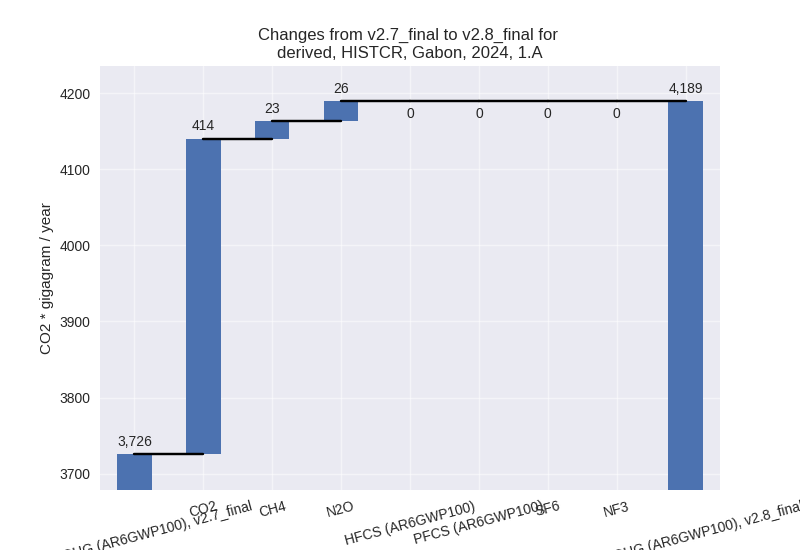
For 1990-2024 the changes per gas
are:
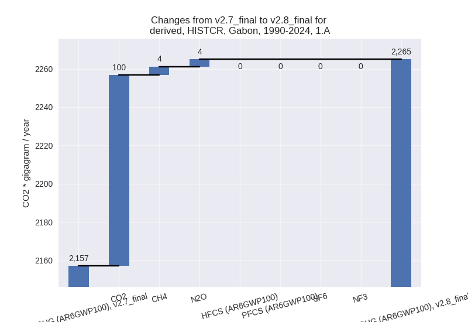
There is no subsector information available in PRIMAP-hist.
- 1.B.2: Total sectoral emissions in 2022 are 1140.76
Gg CO2 / year which is 21.8% of category 1 emissions. 2024 Emissions
have changed by -50.3% (-1096.74 Gg
CO2 / year). 1990-2024 Emissions have changed by -19.6% (-471.65 Gg CO2 / year). For 2024
the changes per gas
are:
For 1990-2024 the changes per gas
are:
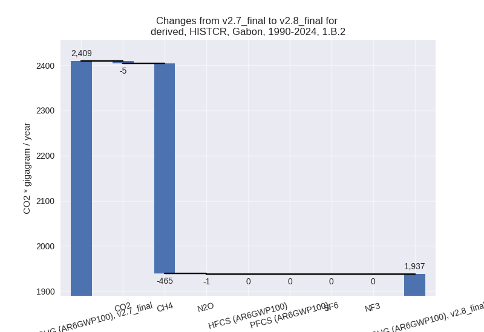
There is no subsector information available in PRIMAP-hist.
- 2: Total sectoral emissions in 2022 are 475.11 Gg
CO2 / year which is 5.9% of M.0.EL emissions. 2024 Emissions have
changed by 50.6% (180.55 Gg CO2 /
year). 1990-2024 Emissions have changed by 6.5% (11.02 Gg CO2 / year). For 2024 the
changes per gas
are:
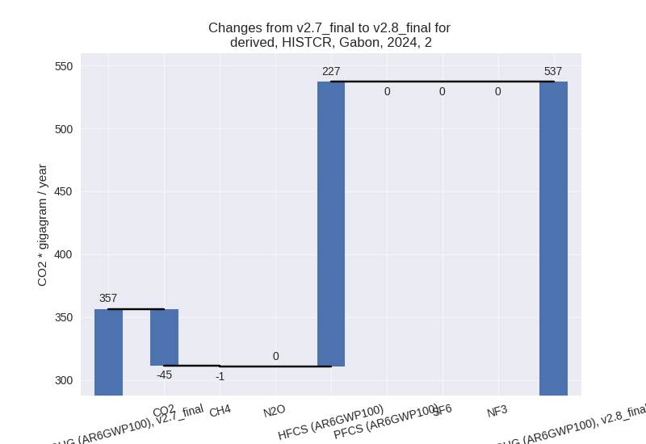
For 1990-2024 the changes per gas
are:
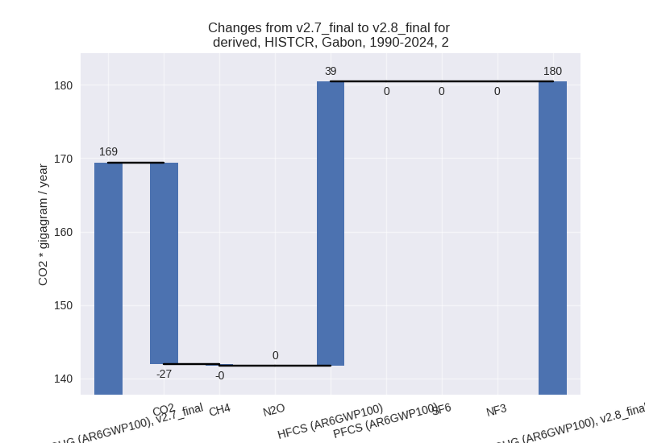
- M.AG: Total sectoral emissions in 2022 are 343.20
Gg CO2 / year which is 4.3% of M.0.EL emissions. 2024 Emissions have
changed by -66.9% (-614.92 Gg CO2 /
year). 1990-2024 Emissions have changed by -68.3% (-588.40 Gg CO2 / year). For 2024
the changes per gas
are:
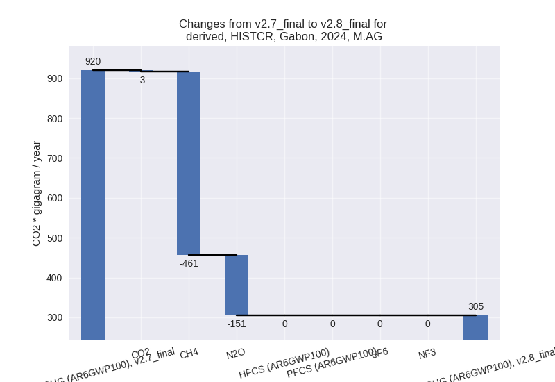
For 1990-2024 the changes per gas
are:
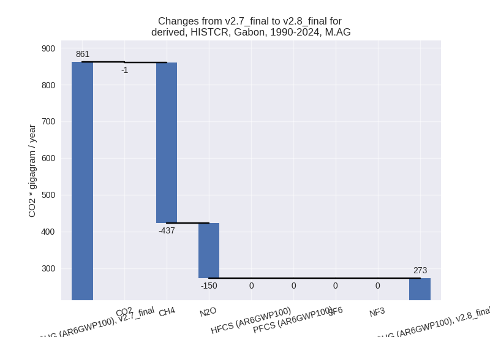
The changes come from the following subsectors:
- 3.A: Total sectoral emissions in 2022 are 40.22 Gg
CO2 / year which is 11.7% of category M.AG emissions. 2024 Emissions
have changed by -68.4% (-87.54 Gg
CO2 / year). 1990-2024 Emissions have changed by -54.4% (-63.75 Gg CO2 / year). For 2024
the changes per gas
are:
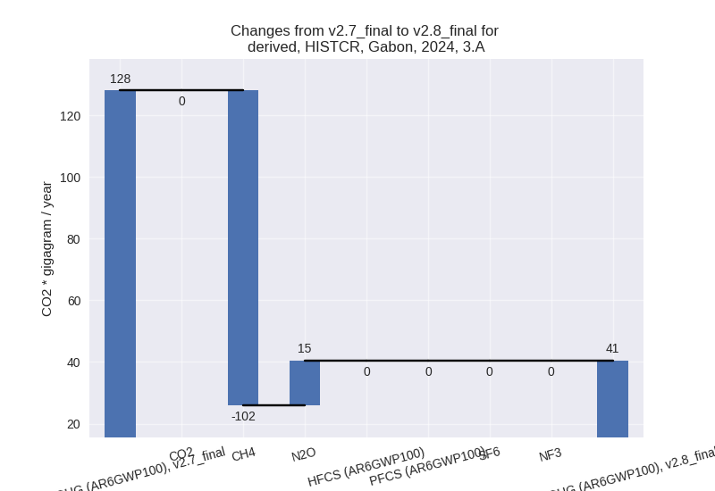
For 1990-2024 the changes per gas
are:
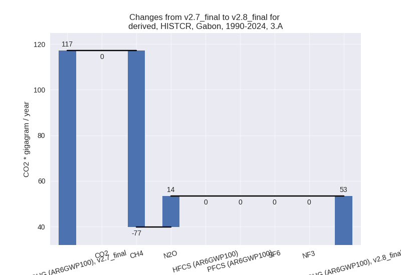
There is no subsector information available in PRIMAP-hist.
- M.AG.ELV: Total sectoral emissions in 2022 are
302.98 Gg CO2 / year which is 88.3% of category M.AG emissions. 2024
Emissions have changed by -66.6%
(-527.38 Gg CO2 / year). 1990-2024 Emissions have changed by -70.5% (-524.65 Gg CO2 / year). For 2024
the changes per gas
are:
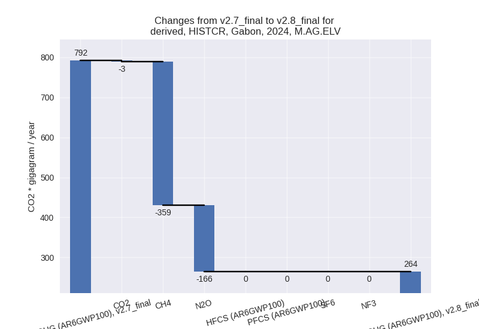
For 1990-2024 the changes per gas
are:
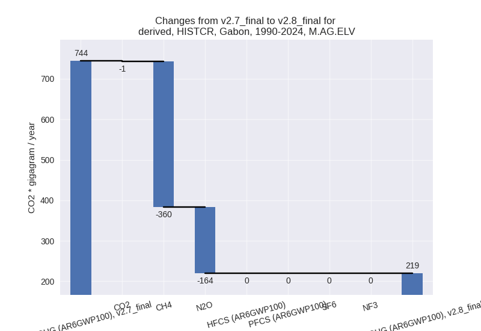
There is no subsector information available in PRIMAP-hist.
- 4: Total sectoral emissions in 2022 are 1829.94 Gg
CO2 / year which is 22.8% of M.0.EL emissions. 2024 Emissions have
changed by 29473.0% (1897.30 Gg CO2
/ year). 1990-2024 Emissions have changed by 17722.7% (469.44 Gg CO2 / year). For 2024
the changes per gas
are:
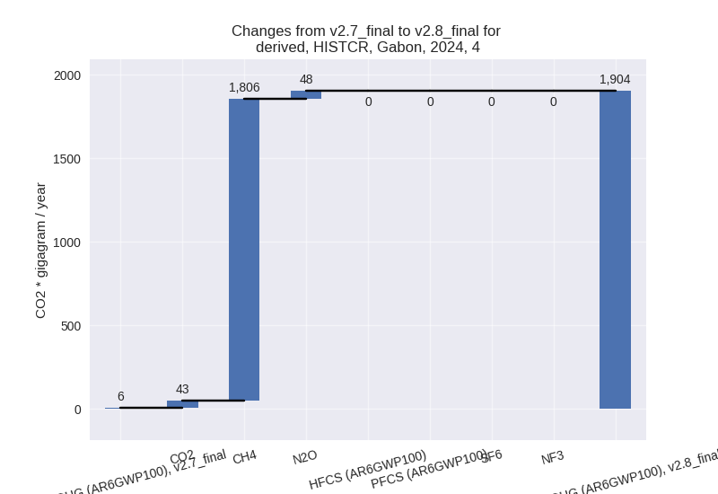
For 1990-2024 the changes per gas
are:
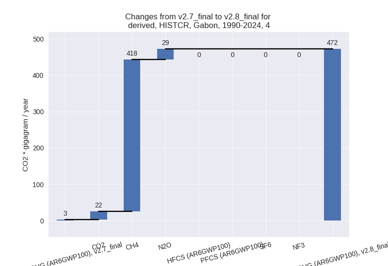
- 5: Total sectoral emissions in 2022 are 143.73 Gg
CO2 / year which is 1.8% of M.0.EL emissions. 2024 Emissions have
changed by 19.1% (24.89 Gg CO2 /
year). 1990-2024 Emissions have changed by 3.0% (4.79 Gg CO2 / year). For 2024 the
changes per gas
are:
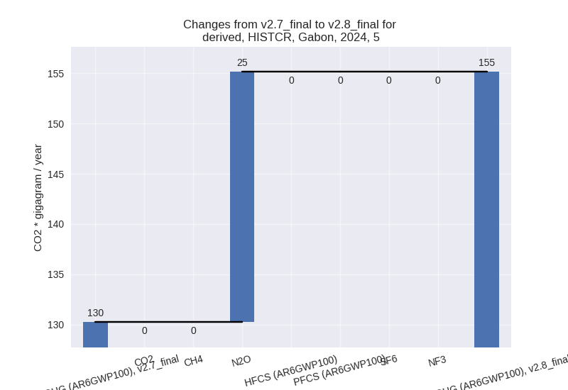
For 1990-2024 the changes per gas
are:
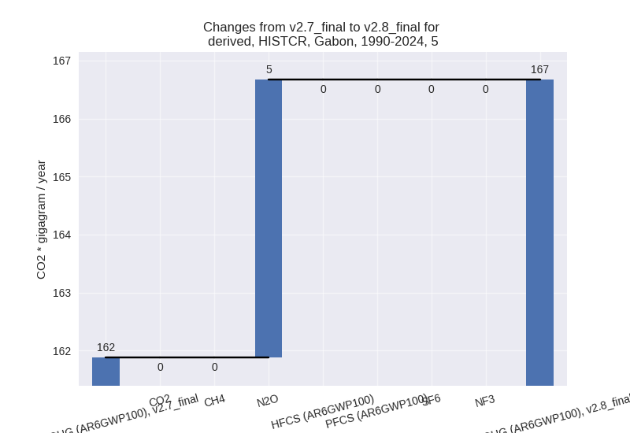
third party scenario (HISTTP):
Most important changes
per time frame
For 2024 the following sector-gas combinations have
the highest absolute impact on national total KyotoGHG (AR6GWP100)
emissions in 2024 (up to 20 with either at least 0.2%
impact on total emissions or at least 20% change):
- 1: 1.A, CO2 with -577.91 Gg CO2 / year (-16.0%), -2.7%)
- 2: 1.B.2, CH4 with 552.89 Gg CO2 / year (4.4%), 2.5%)
- 3: 2, CO2 with -217.83 Gg CO2 / year (-93.4%), -1.0%)
- 4: 1.A, CH4 with 62.66 Gg CO2 / year (13.1%), 0.3%)
- 5: M.AG.ELV, N2O with -58.48 Gg CO2 / year (-18.6%), -0.3%)
- 6: M.AG.ELV, CO2 with -2.87 Gg CO2 / year (-57.4%), -0.0%)
- 7: 2, CH4 with 0.26 Gg CO2 / year (24.3%), 0.0%)
For 1990-2024 the following sector-gas combinations
have the highest absolute impact on national total KyotoGHG (AR6GWP100)
emissions in 1990-2024 (up to 20 with either at least
0.1% impact on total emissions or at least 10% change):
- 1: 1.A, CO2 with -175.61 Gg CO2 / year (-8.1%), -0.8%)
- 2: 2, CO2 with -93.78 Gg CO2 / year (-77.9%), -0.4%)
- 3: M.AG.ELV, CO2 with -0.69 Gg CO2 / year (-24.4%), -0.0%)
- 4: 2, CH4 with 0.03 Gg CO2 / year (11.7%), 0.0%)
Changes in the main sectors for aggregate KyotoGHG (AR6GWP100)
are
- 1: Total sectoral emissions in 2022 are 17569.36 Gg
CO2 / year which is 88.5% of M.0.EL emissions. 2024 Emissions have
changed by 0.4% (78.24 Gg CO2 /
year). 1990-2024 Emissions have changed by -0.7% (-150.57 Gg CO2 / year).
- 2: Total sectoral emissions in 2022 are 1254.26 Gg
CO2 / year which is 6.3% of M.0.EL emissions. 2024 Emissions have
changed by -13.2% (-218.18 Gg CO2 /
year). 1990-2024 Emissions have changed by -16.1% (-93.77 Gg CO2 / year). For 2024
the changes per gas
are:
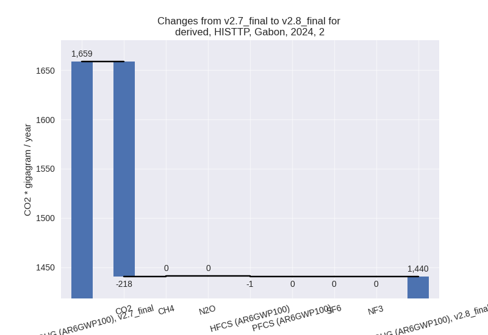
For 1990-2024 the changes per gas
are:
- M.AG: Total sectoral emissions in 2022 are 597.66
Gg CO2 / year which is 3.0% of M.0.EL emissions. 2024 Emissions have
changed by -13.6% (-82.54 Gg CO2 /
year). 1990-2024 Emissions have changed by 0.2% (1.01 Gg CO2 / year). For 2024 the
changes per gas
are:
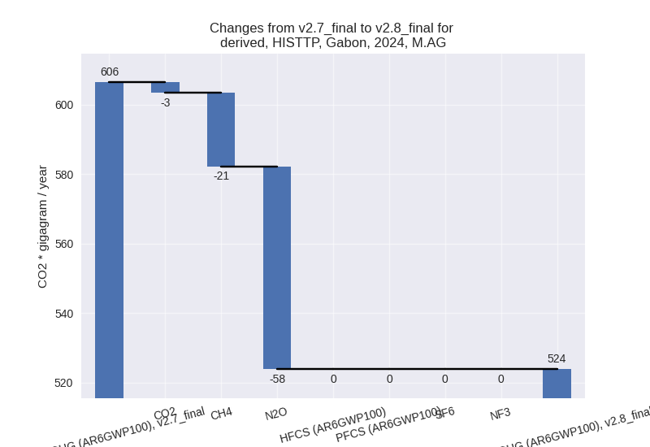
The changes come from the following subsectors:
- 3.A: Total sectoral emissions in 2022 are 130.48 Gg
CO2 / year which is 21.8% of category M.AG emissions. 2024 Emissions
have changed by 0.2% (0.27 Gg CO2 /
year). 1990-2024 Emissions have changed by -0.0% (-0.04 Gg CO2 / year).
- M.AG.ELV: Total sectoral emissions in 2022 are
467.18 Gg CO2 / year which is 78.2% of category M.AG emissions. 2024
Emissions have changed by -17.4%
(-82.81 Gg CO2 / year). 1990-2024 Emissions have changed by 0.3% (1.05 Gg CO2 / year). For 2024 the
changes per gas
are:
There is no subsector information available in PRIMAP-hist.
- 4: Total sectoral emissions in 2022 are 297.63 Gg
CO2 / year which is 1.5% of M.0.EL emissions. 2024 Emissions have
changed by 6.7% (19.37 Gg CO2 /
year). 1990-2024 Emissions have changed by 1.9% (3.77 Gg CO2 / year). For 2024 the
changes per gas
are:
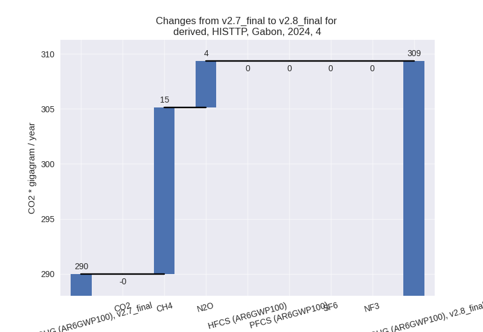
- 5: Total sectoral emissions in 2022 are 143.73 Gg
CO2 / year which is 0.7% of M.0.EL emissions. 2024 Emissions have
changed by 19.1% (24.89 Gg CO2 /
year). 1990-2024 Emissions have changed by 3.0% (4.79 Gg CO2 / year). For 2024 the
changes per gas
are:
For 1990-2024 the changes per gas
are:
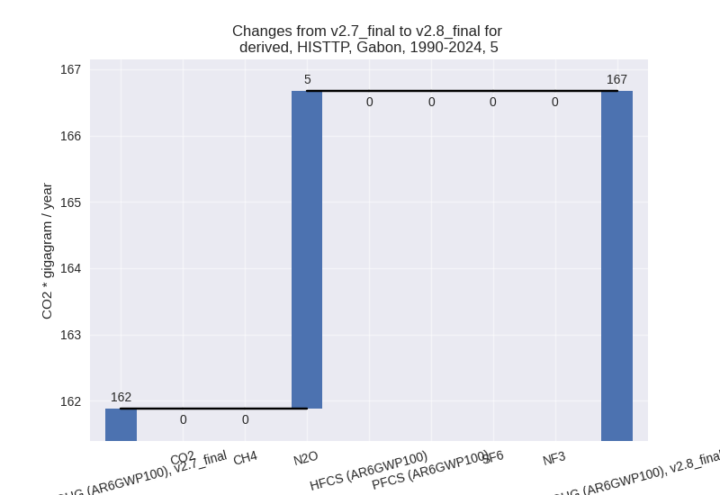